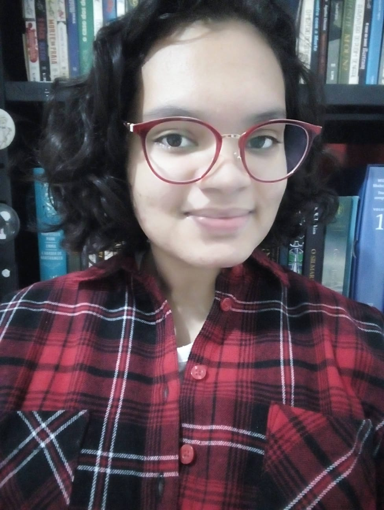

Juliana Souza Santos
Me chamo Juliana, tenho 23 anos, moro em Cabreúva/SP, sou formada em Marketing pela Uninter e atualmente curso Análise e Desenvolvimentos de Sistemas e Técnico em informática, pela mesma instituição. Gosto muito de aprender coisas novas, estudar, ler livros de ficção, assistir filmes e séries clássicos, cozinhar e praticar exercícios físicos. Ah, minha cor favorita é vermelho, desde que me entendo por gente!